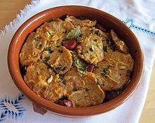

| Autor: Alejandro Rivera Casaseca Fecha:20/01/2021 |
Palencia |
||||||||
| Inicio |
|
||||||||
| Burgos | |||||||||
| León | |||||||||
| Ávila | |||||||||
| Salamanca | |||||||||
| Segovia | |||||||||
| Soria | |||||||||
| Valladolid | |||||||||
| Zamora | |||||||||
| Pagina de contacto | |||||||||
LocalizaciónLocalidadesLas localidades más importantes de la provincia en cuanto a población y también desde el punto de vista histórico son Aguilar de Campoo, Guardo, Barruelo de Santullán, Cervera de Pisuerga, Herrera de Pisuerga, Saldaña, Carrión de los Condes, Osorno la Mayor, Paredes de Nava, Venta de Baños, Villamuriel de Cerrato y Dueñas, además de la propia capital provincial, Palencia. Mas informaciónGeografíaLa capital se sitúa en el valle del río Carrión cerca de su desembocadura en el Pisuerga. El primero atraviesa la ciudad de norte a sur, y se abre en tres brazos al entrar en la ciudad, formando la isla del Sotillo y otra pequeña isla, ambas ocupadas por un parque llamado Sotillo de los Canónigos, así llamado por servir antiguamente de zona de paseo para los canónigos de la vecina catedral. El Carrión se vuelve a unir (es el lugar en el que se encuentra el Puente Mayor (del siglo xvi) para abrirse de nuevo en dos brazos, formando otra isla (isla Dos Aguas), ocupada en su zona norte por un parque y en la sur por diversas instalaciones deportivas y un campo de golf. El río forma pequeñas cascadas y es fuente para un géiser artificial que adorna el cauce a la altura del Puente Mayor. Al abandonar la ciudad, el río vuelve a unir sus aguas. Volver al principioHistoriaLa historia de la ciudad de Palencia se remonta a la antigüedad, con un conjunto de asentamientos de tribus celtíberas que fue denominado Pallantia. En la Edad Media se desarrolló en los márgenes del río Carrión impulsada por Sancho III el mayor de Navarra. Durante los siglos XII y XIII creció en extensión y población y se convirtió en un señorío eclesiástico a cuyo frente se hallaba el obispo de la diócesis. Las amplias prerrogativas que los prelados obtuvieron de los reyes generó en la ciudad un ambiente de conflicto permanente, que estallaría de forma violenta en numerosas ocasiónes, especialmente en 1520, durante la revuelta comunera. Palencia se sumó a ella con mucho entusiasmo. Tras este acontecimiento experimentó cierto crecimiento que no mucho después terminó por acabarse. El siglo XVII, pues, significó para la ciudad un periodo de decadencia, que recién pudo recuperar parte de lo perdido en el siglo siguiente. En el siglo XX intervino en la Guerra Civil Española a favor mayormente de los sublevados. En el siglo XXI experimentó numeroso cambios urbanísticos. Volver al principioCulturaEn Palencia hay muchas actividades culturales para hacer, como visitar monumentos, iglesias, sus numerosos municipios, mencionados antes, etc. En el siguiente enlace, podrá encontrar todas las actividades culturales que podrá realizar en su visita a Palencia. Actividades culturales de Palencia Volver al principio NaturalezaEstos son los 10 mejores parajes naturales de la provincia de Palencia: La Cueva de los Franceses, Bison Bonasus, Mirador de Covalagua, Pozo de las Lomas, Cascada Mazobres, Embalse de Aguilar, Las Tuerces y el cañón de la Horadada, Parque Fuentes Carrionas, Bisonbonaus, Parque Ferroviario Si desea conocer más sobre estos parajes, o sobre otros que no se han mencionado, puede acceder a ellos a través de estos enlaces: Volver al principioTradicionesDesde el siglo XV, Palencia celebra sus fiestas de Semana Santa, caracterizadas por la fe, el silencio y el fervor religioso que se manifiesta durante estos días por sus calles.La austeridad y la sobriedad acompañan todas sus procesiones, en las que desfilan imágenes y tallas con siglos de historia. Las noches del martes y miércoles tiene lugar la “llamada de los hermanos”, de gran tradición: mediante toques de corneta y golpes en las puertas, se llama a la gente para que participe en las procesiones. El sonido del “tararú”, característico de la celebración de Palencia, acompaña a los desfiles: consiste en identificar las paradas y reanudaciones de la procesión mediante cornetas y un coro de niños, y es todo un espectáculo. La procesión del Rompimiento del Velo pone fin a la Semana Santa en esta ciudad. El sonido de los cohetes, el repique de campanas y el reparto de panecillos, almendras y limonada anuncian la Resurrección de Cristo.La Semana Santa es una de las fiestas más profundas y arraigadas que se celebran en España. Esta conmemoración cuenta con siglos de historia y tradición, y en ella se recuerda la pasión y muerte de Jesucristo. Las calles de la mayoría de ciudades y pueblos de España se convierten en escenarios de fervor y devoción religiosa, en los que se entremezclan el duelo y el recogimiento al recordar la muerte de Cristo, con la música, el arte, el colorido y la magia de las procesiones, desfiles solemnes en los que numerosas personas acompañan a las imágenes religiosas. Este es un vídeo de una de las fiestas de Palencia: Volver al principio OtrosGastronomíaPatatas a la importancia, guiso típico palentino. La panceta asada es un plato muy popular en las festividades de la mayoría de pueblo de la Provincia de Palencia. Morcillas palentinas de Cornón de la Peña. Plato de venado guisado con patatas fritas, uno de los platos más apreciados en la Montaña Palentina. La siguiente imagen es un ejemplo de gastronomía de la provincia de Ávila, son las patatas revolconas Volver al principio |